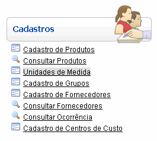
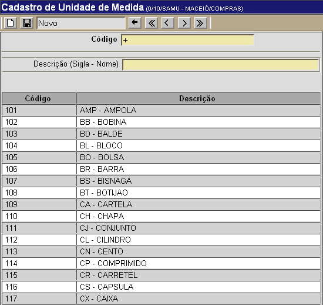

Unidades de Medida [ Voltar ]
Utilize este formulário para cadastrar no sistema as unidades de medida utilizadas na rede.
O formulário "Unidades de Medida" encontra-se dentro do menu "Cadastros".

Ao clicar no formulário, o sistema exibirá a seguinte
tela:

1°
Passo: preencha as informações sobre o centro de custo que deseja
cadastrar. Os campos em
amarelo são obrigatórios.
- Código. Este campo
apresenta por padrão um sinal de "+". Desta forma, assim que uma nova
unidade de medida é cadastrada é-lhe atribuída automaticamente o
próximo número de unidade disponível.
- Descrição (Sigla - Nome). Informe aqui a sigla e o nome da nova unidade. Ex: CR - CARRETEL, CX - CAIXA, etc.
2° Passo: clique no botão  para concluir o cadastro da unidade. para concluir o cadastro da unidade.
Ir
para o topo da página
|